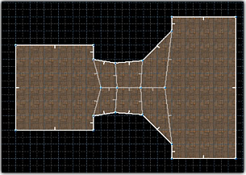

This mode lets you connect parts of existing geometry using Bezier curves.
Found in: Preferences -> Controls -> Drawing.
Default key: Ctrl-B.
Additional actions: Increase Sudivision Level, Decrease Sudivision Level. You can hold Shift while dragging a handle to turn grid snapping off.
| Usage: Select two linedefs or two groups of linedefs: | Then activate the Bridge mode by using the keyboard shortcut or tool button (): | Make some changes, then press the OK button or Enter to accept, or Cancel/Esc to cancel: |
|  |
Options window
| Align floor / Align ceiling dropdowns let you choose how the heights of created sectors are interpolated. Brightness dropdown lets you choose how the brightness of created sectors is interpolated. Subdivisions controls how many subdivisions a bridge has. You can also use "Increase Subdivisions" and "Decrease Subdivisions" actions to control this by using keyboard shortcuts. Activate Mirror mode to mirror paired handle movement: Activate Copy mode to copy paired handle movement: If a shape crosses itself, you can press the "Flip Lines" button to fix this:  |
Interpolation modes:
| Highest ceiling | |
| Lowest floor | |
| Linear interpolation | |
| EaseInSine interpolation - interpolates heights using sinusoidal (sin(t)) easing in. | |
| EaseOutSine interpolation - interpolates heights using sinusoidal (sin(t)) easing out. | |
| EaseInOutSine interpolation - interpolates heights using sinusoidal (sin(t)) easing in/out. |
Setting lower/upper textures:
If you are going to connect sectors with different ceiling and/or floor heights, you'll generally want to set upper and/or lower textures. To do this, set upper or lower textures to linedefs, which will be used to define the shape of the bridge.Let's say we want to make a stairway out of these lines:
| 2D-view: | 3D-view: |
If you bridge these linedefs right now, you'll have lots of unset textures:
Instead of setting them all by hand, set the upper and lower textures of those linedefs, which will be used to create this shape (you need to set only one linedef of the pair):
If you bridge linedefs now, all upper/lower textures will be set: